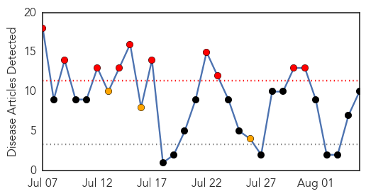
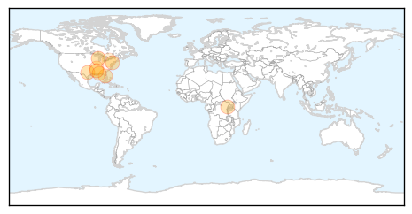
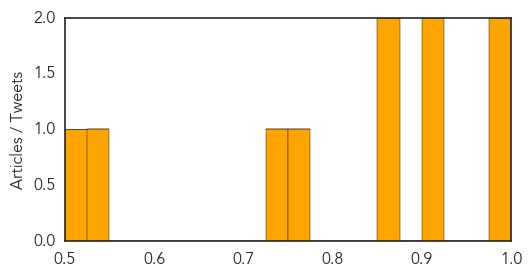

West Nile Virus
30-Day Web Trend
10 alerts, 3 warnings

30-Day Twitter Trend
0 alerts, 0 warnings

Article Locations
Article Confidences
Top Articles:
- 0.992
- West Nile virus found in Ashwaubenon dead crow
- 0.979
- West Nile virus found in Ohio
- 0.913
- What Summer Floods And Triple Digit Temperatures Mean For West Nile Virus
- 0.902
- Insecticide sprayed in Warminster after seven samples test positive for West Nile virus
- 0.867
- Cross border challenge
- 0.863
- 3 More Pinellas Chickens Test Positive for West Nile
- 0.773
- West Nile Case Confirmed in Escamba County
- 0.738
- First human case of West Nile found in Shelby County
- 0.536
- Three West Nile cases confirmed in Larimer County Rocky Mountain Collegian
- 0.525
- NYC Legionnaires outbreak no threat to WNY
Top Tweets:
-
No tweets found for Aug 05, 2015